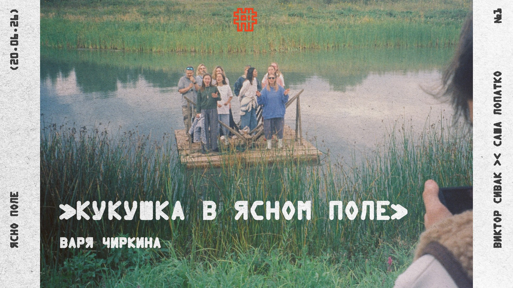
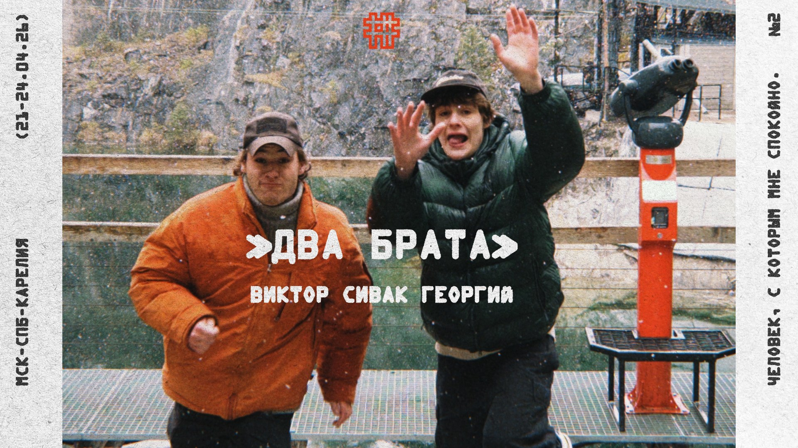
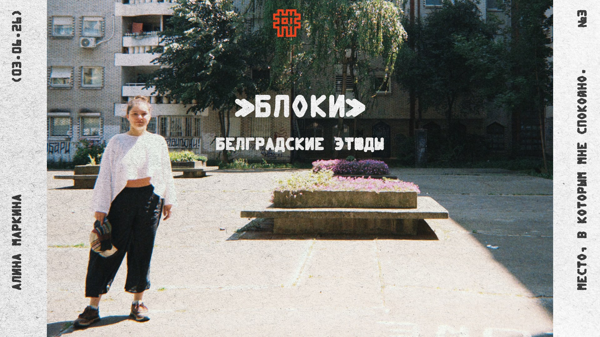
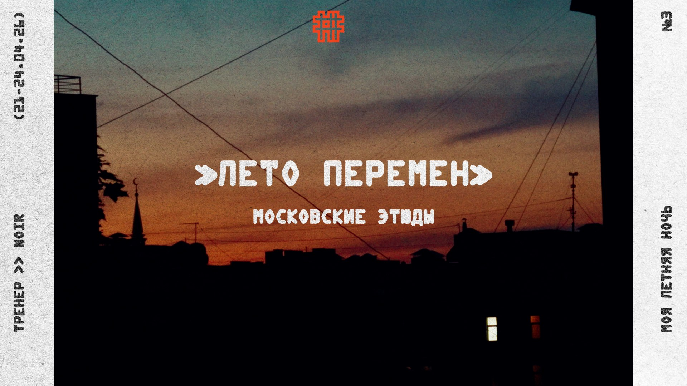
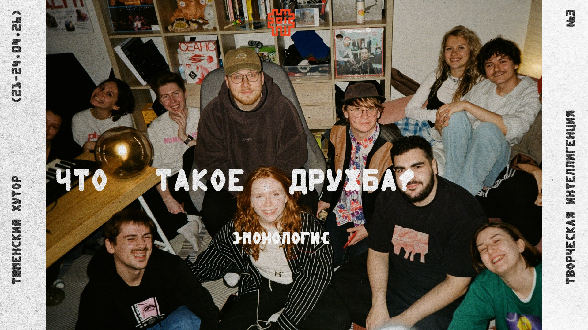
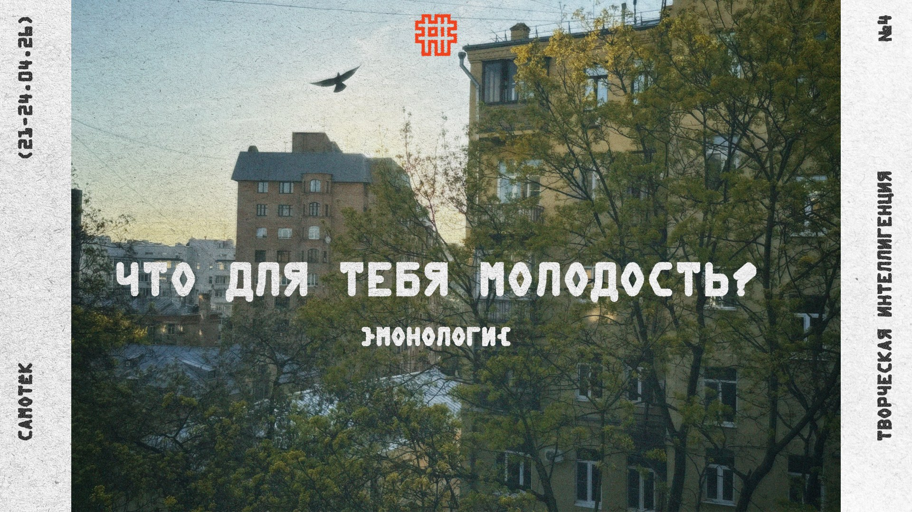
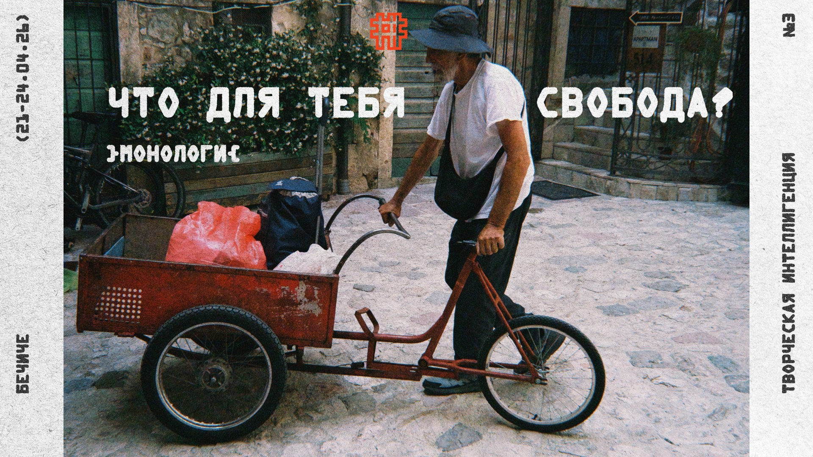

[TODO] Фильм-путешествие — пять белградских этюдов. Сквозь пейзаж, почти без слов, четверо друзей находят утерянное спокойствие — и возвращаются домой. Не зря говорят, хорошо там, где нас нет.
Фильмы
#1

00:00
[TODO] Короткое описание фильма «Кукушка в Ясном поле» — тема, герои, о чём путешествие.
#2

00:00
[TODO] Короткое описание фильма «Два брата» — тема, герои, о чём путешествие.
Этюды
#3

00:00
[TODO] Короткое описание этюда «Блоки» из цикла «Белградские этюды».
#3

00:00
[TODO] Короткое описание этюда «Лето перемен» из цикла «Московские этюды».
Монологи
#3

00:00
[TODO] Короткое описание монолога «Что такое дружба?».
#4

00:00
[TODO] Короткое описание монолога «Что для тебя молодость?».
#3

00:00
[TODO] Короткое описание монолога «Что для тебя свобода?».